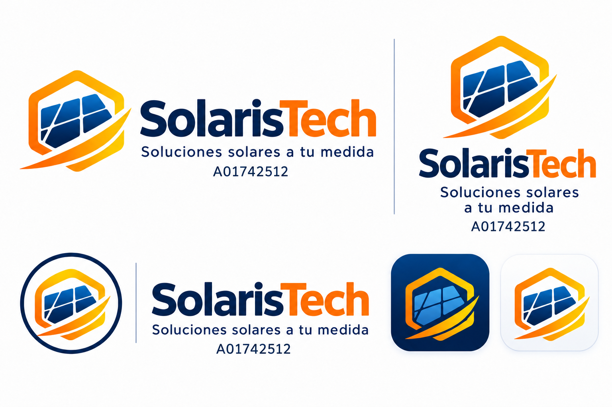

INGENIERÍA QUE SE CONVIERTE EN DECISIONES
Del consumo del aula
a su potencial solar.
Explora, dimensiona y explica una propuesta fotovoltaica. Todos los cálculos a la vista, desde la primera carga hasta la inversión estimada.
Proyecto académico · IIS · Modelo Tec21NUEVO · VERSIÓN 2
Un panel. Tres orientaciones.
Explora el experimento de celdas solares: cara al piso, cara al aire y apuntando al sol. Compara el modelo con tus mediciones de voltaje y corriente.
TU MESA DE TRABAJO
Estudio fotovoltaico
Caso inicial ilustrativo: un aula escolar. Sustituye los valores por mediciones y fichas técnicas. Los cambios se guardan en este navegador.
¿Qué necesita energía?
Registra potencia de placa y horas efectivas de operación.
| Equipo | Cant. | W / equipo | h / día | kWh / día |
|---|
Distribución del consumo diario
Del balance de energía al circuito
Modelo diario promedio. La configuración serie/paralelo es manual para poder comprobar sus límites.
Comprobaciones preliminares
No comprueba instalación, protecciones, conductores, estructura, conexión a red, BMS, corriente de cortocircuito admisible del inversor ni MPPT en caliente. Las comprobaciones favorables no autorizan una instalación.
Una inversión que se pueda explicar
Precios de ejemplo, editables en MXN. No representan cotizaciones de proveedores.
Las especificaciones importan
Panel real de referencia. Inversor y batería genéricos para probar el modelo: reemplázalos por equipos y precios verificables antes de presentar una cotización.
FUNDAMENTO · TE1020
La matemática detrás
de cada decisión.
Modelos usados en la aplicación, con unidades y límites. Abre cada uno para revisar cómo se obtiene un resultado.
APRENDER HACIENDO · TEC21
De estudiante a consultor
en energía solar.
SolarisTech adapta el escenario académico de Photon Labs del documento SP_TE1020. Este laboratorio está pensado para un estudiante de Ingeniería Industrial y de Sistemas con fundamentos de física, matemáticas, Python y MATLAB.
Logos SolarisTech · A01742512


Ruta de evolución
- V1 · Base funcionalConsumo, modelo solar, escenarios y fundamentos.
- Siguiente revisión · Evidencia realMediciones del aula, equipos compatibles y cotizaciones trazables.
- Validación y entregaCasos de prueba, reporte final y publicación en GitHub Pages.
Fuentes: SP_TE1020, pp. 1–5; TE1020 Analítico, pp. 1–3; TE1020 Sintético, pp. 1–2. Los programas delimitan el aprendizaje; las ecuaciones de dimensionamiento son una implementación del proyecto, no valores suministrados por esos programas.